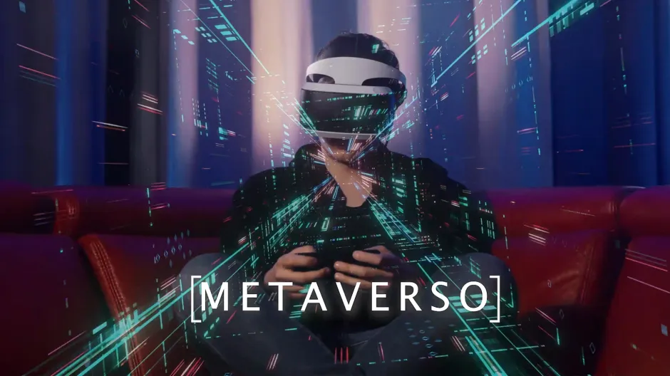
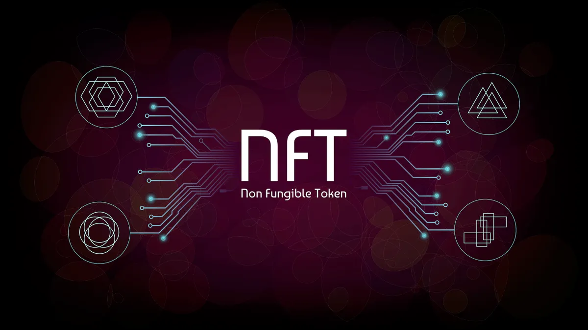

Blockchain
publicado 20 de enero

Blockchain es una tecnología de registro contable que se utiliza para registrar transacciones y almacenar datos de manera segura , transparente y resistente a la manipulación y imposible de hakear. Es la base de funcionamiento de las criptomonedas, como Bitcoin, pero también se puede utilizar para una variedad de otros propósitos. La tecnología blockchain se caracteriza por ser descentralizada(no posee un solo dueño), lo que significa que no hay una autoridad central que controle el registro, y por ser inmutable, lo que significa que una vez que se registra algo en la cadena de bloques, no se puede cambiar ..
Criptomonedas
publicado 20 de enero
Una criptomoneda es un tipo de moneda digital que utiliza criptografía para asegurar y verificar transacciones, así como para controlar la creación de nuevas unidades. Bitcoin fue la primera criptomoneda, pero hay muchas otras que han surgido a medida que el interés en esta tecnología ha crecido. A diferencia del dinero tradicional, no está respaldado por ningún gobierno o entidad central..
Metaverso
Publicado 20 de enero
El metaverso es un término que se refiere a un espacio virtual compartido, generado por computadora, que los usuarios pueden visitar y interactuar con él. Es un mundo virtual en el que los usuarios pueden crear y personalizar avatares, comunicarse y realizar actividades. Los usuarios pueden acceder al metaverso a través de dispositivos de realidad virtual o aumentada. Es un concepto que se ha popularizado en los últimos años y se está desarrollando rápidamente en el ámbito de los videojuegos, la educación y el entretenimiento..
NFT
Publicado 20 de enero
Un NFT es una abreviatura de "non-fungible token", que es un tipo especial de criptomoneda que representa un activo digital único e irrepetible, como una obra de arte digital, un videojuego o una pieza de contenido en línea. A diferencia de las criptomonedas como Bitcoin, que son intercambiables entre sí, cada NFT es único y no puede ser reemplazado por otro. Los NFTs se almacenan en una cadena de bloques, lo que permite a los propietarios verificar su autenticidad y propiedad. Los NFTs han ganado popularidad en los últimos años como una forma de comprar y vender activos digitales de manera segura y transparente..